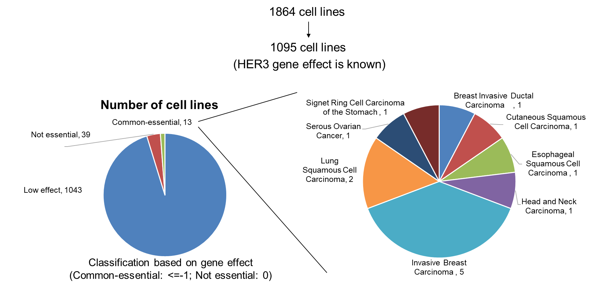
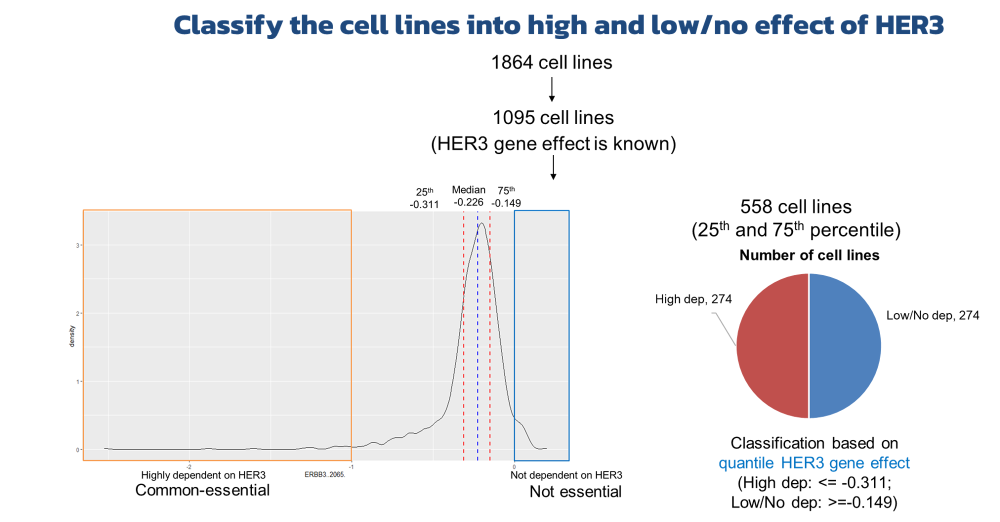
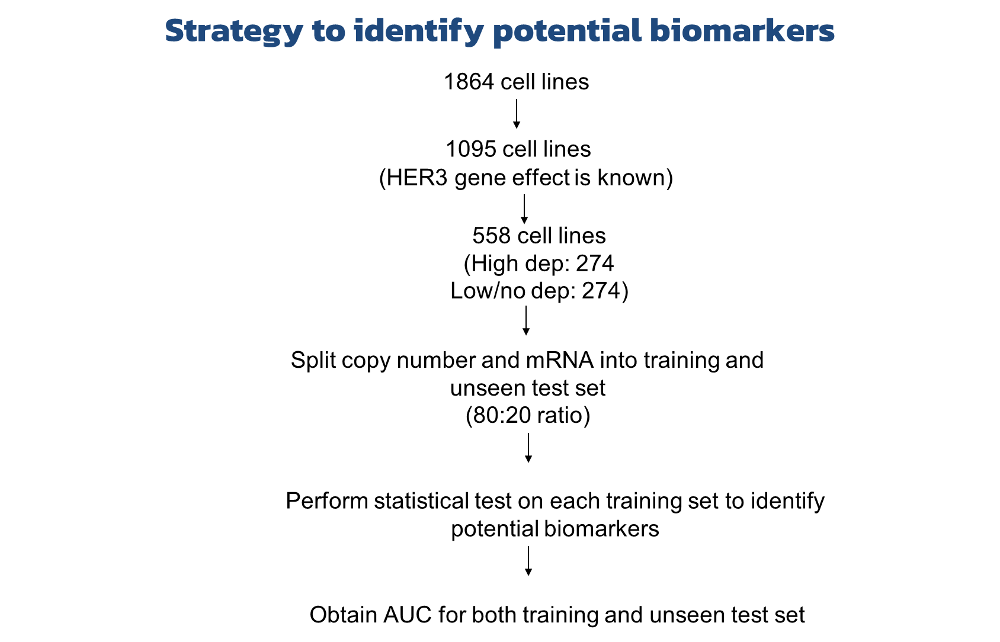
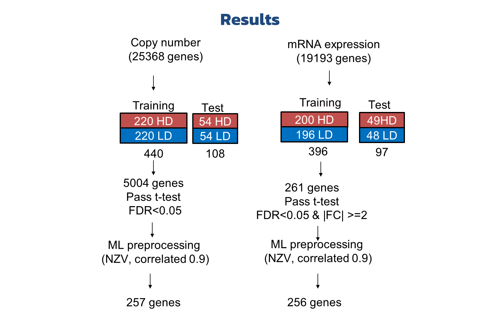
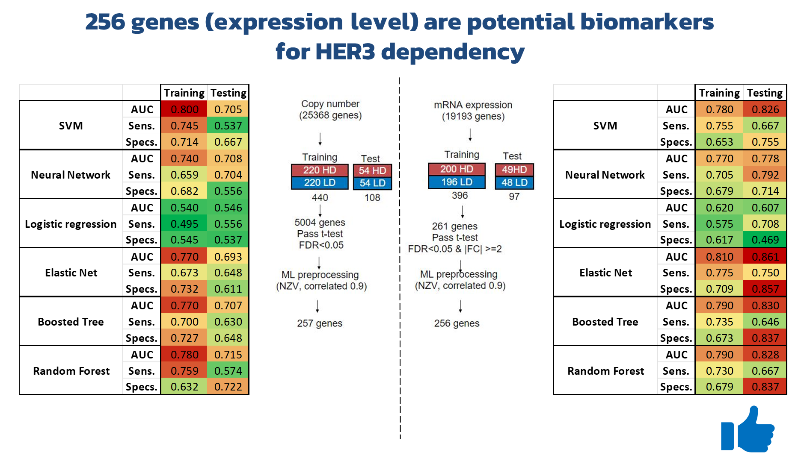
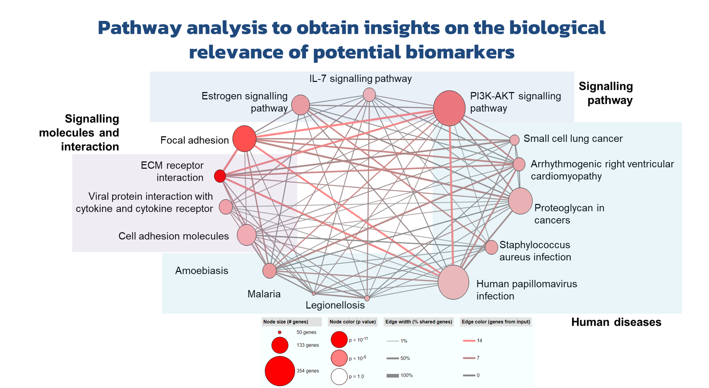
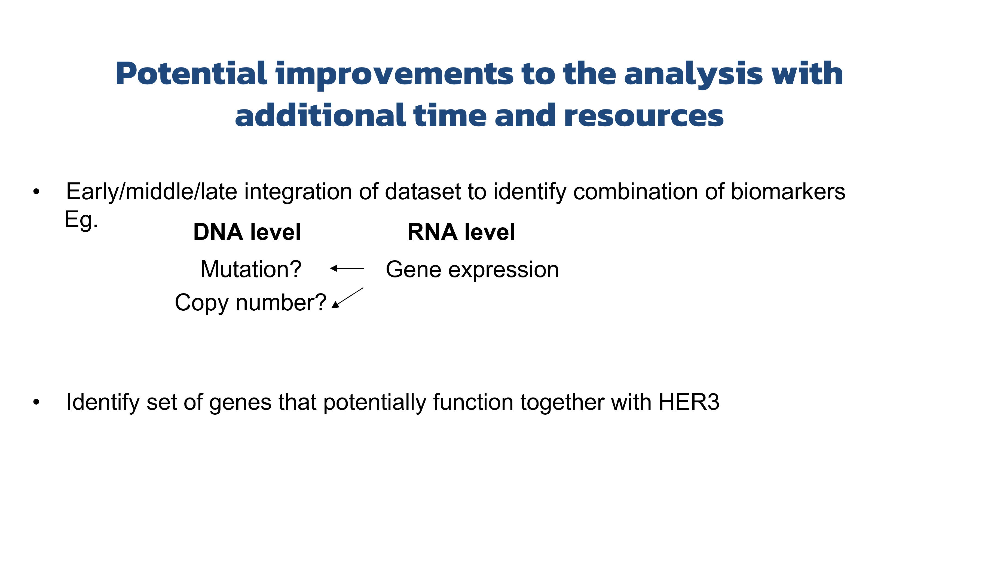

Biomarker Identification for Oncogene Dependency: Guiding treatment response in Precision Medicine
Biomarkers offer insights into treatment outcomes, guiding personalized interventions for improved patient care. In this project, the goal is to identify cancer indications likely to predict responses to therapy targeting important oncogene, using the ERBB3/Her3 gene as an example.
The datasets provided (From DepMap portal):I started with getting an overview of the datasets by combining CRISPRGeneEffect and Model data. During this process, I was able to identify duplicated data points and remove the identifical data points which are redundant.
The next step involves classifying the 1095 cell lines with known HER3 gene effects into two groups for classification: one highly dependent on HER3 and the other not. The default threshold for the common essential gene effect is <= -1, with the gene effect not deemed essential being equal to 0. However, based on the distribution graph below, only 25% of cell lines do not depend on HER3, while 75% of cell lines depend on HER3 using the default threshold. The result is an imbalanced dataset for machine learning. To resolve this issue, I reclassify the cell lines based on 25th and 75th percentile of HER3 gene effect.
After classifying the cell lines into groups (HD: High dependency; LD: Low/No dependency), the next step is to identify potential biomarkers. Below is a summary of my strategy to identify potential biomarkers. In this project, I used statistical method to identify potential biomarkers but evaluate their predictive performance using six different machine learning models on both training and unseen test set.
I used the same strategy on Copy number data (Dataset name:OmicsCNGene) and Protein coding gene expression (Dataset name:OmicsExpressionProteinCodingGenesTPMLogp1) data. The results are shown below:
Since the number of potential predictors from both copy number data and gene expression data are comparable, I investigated the predictive performance and compare the results (See below). In general, the predictive performance of 256 gene expression is comparable with copy number of 257 genes in training set but the performance is much better in unseen test set.
To gain insights into the potential biomarkers (256 genes), pathway analysis was conducted using CPDB molgen website. The result showed that the genes potentially predicting HER3 dependency are involved in signaling pathways, with some of them related to EGFR signaling pathways involving HER3.
Although the results look promising, there are some methods that could further improve the analysis:
For this project, I have also generated an R notebook embedded below. If you have any suggestion to improve the analysis or interested to collaborate, please feel free to contact me :D